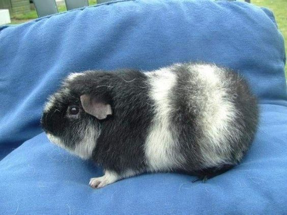
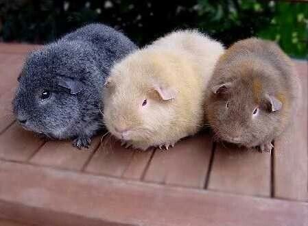
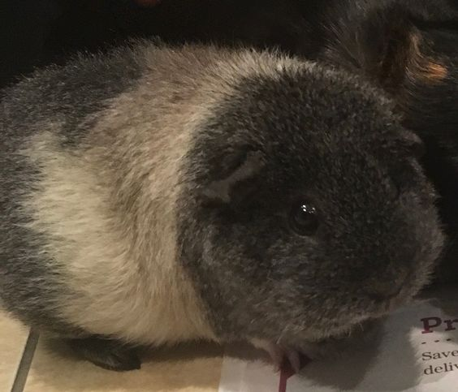
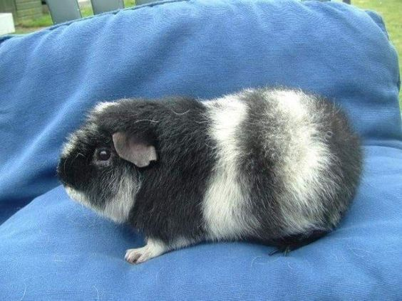
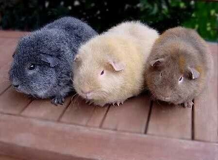
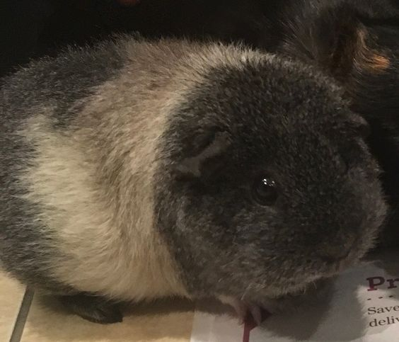
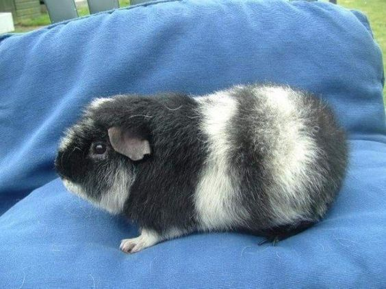
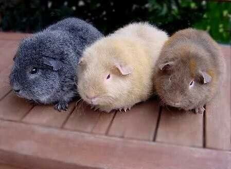
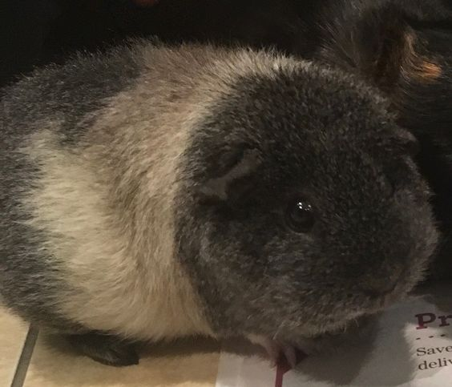

Порода морських свинок тедді з’явилася в 1960-х роках в Канаді. Її було виведено не цілеспрямовано, це сталося випадково в результаті генетичної мутації. Миловидна зовнішність настільки вразила селекціонерів, що було прийнято рішення продовжити займатися розведенням цієї лінії. Ця порода отримала свою назву через схожість свинок з плюшевим ведмедиком.
Шерсть тедді дуже м’яка на дотик. Довжина її не перевищує 2 сантиметри, тому завжди стоїть сторчма. Вони мають великі очі і дуже виразні. Забарвлення тедді досить різноманітне. Мурчак може бути однотонним або двоколірним, наприклад, білим, з чорними або коричневими цятками.


